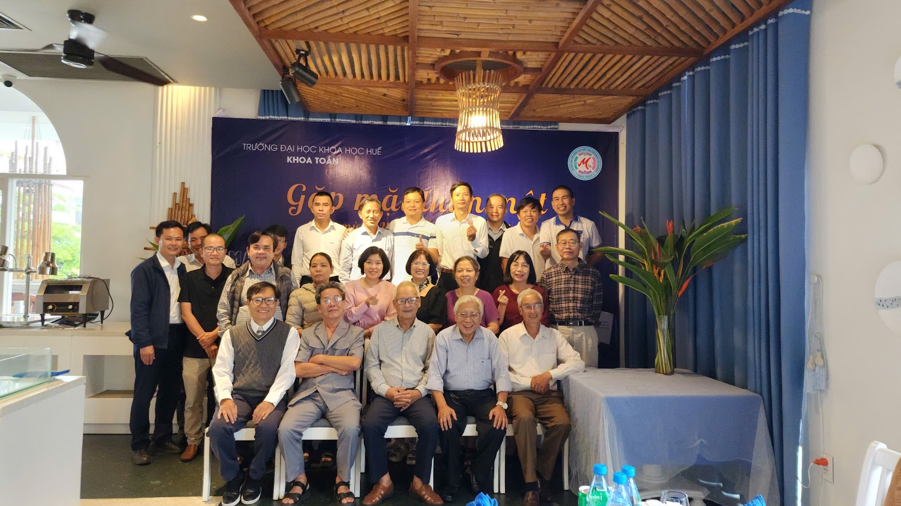

Khoa Toán học, trường Đại học Khoa học Huế được thành lập từ những ngày đầu xây dựng trường, là một trong những nơi đào tạo ngành Toán học hàng đầu tại khu vực miền Trung và Tây Nguyên.
MỤC TIÊU
Đào tạo các cử nhân Toán học có kiến thức nền tảng vững chắc, có khả năng tư duy logic cao và ứng dụng Toán học vào các lĩnh vực công nghệ, kinh tế và giáo dục trong kỷ nguyên số.
QUY MÔ
Với bề dày lịch sử gần 70 năm, Khoa đã đào tạo hàng nghìn cử nhân và thạc sĩ ưu tú, hiện đang giữ nhiều vị trí quan trọng trong các cơ quan nghiên cứu và doanh nghiệp lớn.
TUYỂN SINH 2026
NGÀNH KHOA HỌC DỮ LIỆU TẠI KHOA TOÁN, TRƯỜNG ĐẠI HỌC KHOA HỌC, ĐẠI HỌC HUẾ: KẾ THỪA NỀN TẢNG VỮNG CHẮC, BỨT PHÁ CÙNG KỶ NGUYÊN SỐ
Trong sự bùng nổ của kỷ nguyên số, dữ liệu đã trở thành tài sản vô giá và việc làm chủ dữ liệu chính là chìa khóa mở ra cánh cửa thành công của mọi tổ chức, doanh nghiệp. Vào năm 2026, Khoa Toán – Trường Đại học Khoa học, Đại học Huế chính thức triển khai tuyển sinh ngành học mang tính xu thế toàn cầu: Khoa học dữ liệu. Đây là bước đi chiến lược nhằm đáp ứng nhu cầu nhân lực chất lượng cao trong bối cảnh cuộc cách mạng công nghệ đang diễn ra vô cùng mạnh mẽ.
Đáng chú ý, chương trình đào tạo ngành Khoa học dữ liệu tại Khoa Toán không hề bắt đầu từ con số không, mà thực chất là sự nâng cấp, kế thừa trọn vẹn nền tảng vững chắc và kinh nghiệm vận hành dày dặn từ ngành Quản trị và phân tích dữ liệu – một ngành học đã khẳng định được uy tín, thương hiệu vững chắc của Khoa kể từ năm 2020. Sự cải tiến mang tính kế thừa này nhằm hướng tới việc đáp ứng các yêu cầu ngày càng cao hơn của chuẩn mực giáo dục trong khu vực.
Để mang đến cái nhìn thực tế và khách quan nhất cho quý phụ huynh cùng các bạn học sinh, chúng ta hãy cùng lắng nghe những chia sẻ chân thực về môi trường học tập, rèn luyện từ chính các thế hệ sinh viên đi trước thuộc ngành học "tiền thân" đầy tự hào này.
Môi trường học tập năng động, thân thiện qua góc nhìn của "Tân binh"
Đầu tiên, hãy cùng trò chuyện với bạn Bảo Thái, hiện đang là sinh viên năm thứ nhất. Khi được hỏi về cơ duyên đến với Khoa Toán và những cảm nhận đầu tiên sau một năm học tập tại đây, Bảo Thái hào hứng tâm sự:
Bảo Thái - Sinh viên năm thứ nhất ngành QT và PT dữ liệu
“Một năm trước, em biết đến ngành Quản trị và Phân tích dữ liệu thông qua các thông tin tuyển sinh trên truyền hình và các kênh truyền thông của Trường. Sau khi tìm hiểu, em nhận thấy đây là ngành học phù hợp với xu hướng phát triển của công nghệ, có nhiều cơ hội nghề nghiệp và cũng rất phù hợp với sở thích làm việc với số liệu của em. Trải qua 2 học kì, em cảm thấy môi trường học tập ở đây rất năng động và thân thiện. Thầy cô luôn nhiệt tình hỗ trợ sinh viên, còn chương trình học giúp em tiếp cận nhiều kiến thức cũng như kỹ năng mới về dữ liệu và công nghệ. Chính điều này đã giúp em tự tin hơn với lựa chọn của mình”.
Trải nghiệm thực tế phong phú và gắn kết chặt chẽ cùng doanh nghiệp
Không chỉ dừng lại ở lý thuyết trên sách vở, chương trình đào tạo Quản trị và Phân tích dữ liệu tại Khoa Toán đặc biệt chú trọng tới tính ứng dụng và trải nghiệm thực tế của sinh viên. Chia sẻ về kỷ niệm đáng nhớ và ấn tượng sâu sắc nhất của mình trong suốt quá trình học tập, bạn Minh Hiếu – sinh viên năm thứ hai cho biết:
Minh Hiếu - Sinh viên năm thứ hai ngành QT và PT dữ liệu
“Trong quá trình theo học ngành Quản trị và Phân tích dữ liệu tại Khoa Toán, Trường Đại học Khoa học, Đại học Huế, em đã có nhiều trải nghiệm đáng nhớ. Trong đó, điều khiến em ấn tượng nhất là chuyến tham quan thực tế tại Công ty Brycen Vietnam do Khoa tổ chức. Tại đây, chúng em được tìm hiểu về hoạt động của công ty, các dự án đang triển khai, cơ hội nghề nghiệp trong tương lai, đồng thời được giao lưu với đại diện doanh nghiệp và nhận những phần quà lưu niệm ý nghĩa. Chuyến đi đã giúp em hiểu rõ hơn về ngành học mình đang theo đuổi, đồng thời tạo thêm động lực để em cố gắng học tập và định hướng nghề nghiệp rõ ràng hơn trong tương lai”.
Trang bị bộ kỹ năng thực chiến toàn diện cho tương lai
Khi bước sang năm học thứ ba, sinh viên sẽ được tiếp cận sâu hơn với những công cụ cốt lõi và các kỹ năng nghề nghiệp chuyên sâu nhằm đáp ứng nhu cầu khắt khe của thị trường lao động. Bạn Như Phương – sinh viên năm thứ ba, đã đúc kết lại những giá trị thực tế mà bản thân tích lũy được:
Như Phương - Sinh viên năm thứ ba ngành QT và PT dữ liệu
“Sau 3 năm theo học ngành Quản trị và Phân tích dữ liệu, em được trang bị nhiều kỹ năng phục vụ cho công việc trong tương lai. Em có thể thu thập, làm sạch, xử lý và phân tích dữ liệu từ nhiều nguồn khác nhau để tìm ra các thông tin hữu ích hỗ trợ việc ra quyết định. Bên cạnh đó, em được học và thực hành các công cụ như Excel, SQL và Python để khai thác dữ liệu, xây dựng báo cáo và trực quan hóa kết quả phân tích. Ngoài ra, chương trình học còn giúp em phát triển tư duy phân tích, kỹ năng làm việc nhóm, thuyết trình và thực hiện dự án. Những kỹ năng này giúp em tự tin hơn với định hướng trở thành một chuyên viên phân tích dữ liệu”.
Lời nhắn nhủ từ "Đàn chị" năm cuối
Là người đã đi qua gần trọn vẹn chặng đường 4 năm dưới mái nhà Khoa Toán, bạn Ngọc Mai – sinh viên năm thứ tư chuẩn bị tốt nghiệp, đã gửi gắm những lời khuyên chân thành đến các bạn học sinh đang đứng trước ngưỡng cửa lựa chọn ngành nghề:
Ngọc Mai - Sinh viên năm thứ tư ngành QT và PT dữ liệu
“Là sinh viên năm cuối, em muốn nhắn gửi đến các bạn đang quan tâm ngành Khoa học dữ liệu rằng hãy mạnh dạn tìm hiểu và lựa chọn ngành học phù hợp với sở thích và định hướng của bản thân. Trong quá trình học sẽ có những thử thách nhất định, nhưng đó cũng chính là cơ hội để các bạn rèn luyện tính kiên trì, khả năng tự học và tinh thần chủ động. Nếu các bạn yêu thích tư duy logic, thích khám phá và giải quyết vấn đề, đồng thời mong muốn làm việc trong một lĩnh vực có tính ứng dụng cao, thì đây sẽ là một lựa chọn rất đáng để thử sức”.
Ngành Khoa học dữ liệu năm 2026 – Nơi kiến tạo và làm chủ công nghệ tương lai
Nền tảng vững chắc cùng những kết quả thực tế, sinh động từ các khóa đàn anh đàn chị đi trước chính là một bệ phóng vô cùng hoàn hảo cho ngành Khoa học dữ liệu kể từ năm học này. Khi theo học ngành Khoa học dữ liệu tại Khoa Toán, các bạn sinh viên sẽ có cơ hội được đi sâu hơn nữa vào các hệ thống thuật toán nâng cao, Trí tuệ nhân tạo (AI) và làm chủ các công nghệ đón đầu tương lai.
Mỗi hành trình lớn lao đều bắt đầu từ một lựa chọn đúng đắn. Hãy chọn ngành Khoa học dữ liệu tại Khoa Toán, Trường Đại học Khoa học, Đại học Huế để khai phá tiềm năng, mở khóa tương lai của chính bạn và trở thành một mảnh ghép tuyệt vời tiếp theo của Khoa Toán!
Góc trải nghiệm
Cùng sinh viên Khoa Toán HUSC khám phá ngành Khoa học dữ liệu:
Khoa Toán luôn sẵn sàng chào đón thế hệ tân sinh viên năm 2026!
VỀ CHÚNG TÔI
KHOA TOÁN HỌC - HUSC
Khoa Toán là một trong những đơn vị hình thành sớm nhất của Trường Đại học Khoa học, Đại học Huế, có lịch sử gắn liền với sự ra đời của Viện Đại học Huế vào ngày 01/3/1957. Trải qua gần bảy thập kỷ xây dựng và phát triển, Khoa không ngừng lớn mạnh, từng bước khẳng định vị thế là trung tâm đào tạo và nghiên cứu Toán học có uy tín tại khu vực miền Trung – Tây Nguyên cũng như trên phạm vi cả nước.

Trong những năm đầu thành lập, mặc dù điều kiện cơ sở vật chất và đội ngũ giảng viên còn nhiều hạn chế, Khoa đã nỗ lực vượt qua khó khăn, từng bước xây dựng và phát triển đội ngũ cán bộ từ nguồn sinh viên tốt nghiệp xuất sắc, đồng thời tích cực thu hút các nhà khoa học được đào tạo trong và ngoài nước về công tác. Sau năm 1975, cùng với quá trình tái cấu trúc hệ thống đại học, Khoa Toán – Lý được hình thành trong Trường Đại học Tổng hợp Huế và đến năm 1988 phát triển thành Khoa Toán – Cơ – Tin học. Từ năm 1994, khi Đại học Huế được tái lập, Khoa tiếp tục được kiện toàn tổ chức, ổn định mô hình đào tạo và phát triển các bộ môn theo hướng chuyên sâu.
Hiện nay, Khoa Toán có đội ngũ giảng viên trình độ cao gồm các phó giáo sư, tiến sĩ, thạc sĩ và nghiên cứu sinh, đảm nhiệm đào tạo ở nhiều trình độ khác nhau. Khoa tổ chức đào tạo các ngành:
Bên cạnh đó, Khoa còn tham gia giảng dạy hệ THPT chuyên và đảm nhiệm các học phần Toán cơ bản cho nhiều ngành trong Trường.
Hoạt động nghiên cứu khoa học của Khoa được triển khai thường xuyên và có chiều sâu, với nhiều đề tài các cấp cùng các công bố trên các tạp chí chuyên ngành trong và ngoài nước, trong đó có các tạp chí thuộc danh mục ISI/Scopus. Đội ngũ cán bộ của Khoa tích cực tham gia các hội nghị khoa học, mở rộng hợp tác học thuật và trao đổi chuyên môn với các cơ sở đào tạo, viện nghiên cứu trong nước và quốc tế. Nhiều giáo trình và sách chuyên khảo có chất lượng đã được biên soạn, góp phần nâng cao hiệu quả đào tạo và nghiên cứu.
Qua nhiều thế hệ, sinh viên tốt nghiệp từ Khoa Toán đã và đang công tác trong nhiều lĩnh vực như giáo dục, tài chính – ngân hàng, công nghệ thông tin, thống kê và quản lý nhà nước, đóng góp tích cực vào sự phát triển kinh tế – xã hội của khu vực miền Trung – Tây Nguyên và cả nước. Phát huy truyền thống đoàn kết, tinh thần tự đào tạo và không ngừng đổi mới, Khoa Toán tiếp tục hướng tới mục tiêu nâng cao chất lượng đào tạo, đẩy mạnh nghiên cứu khoa học và tăng cường hội nhập học thuật trong giai đoạn phát triển mới.